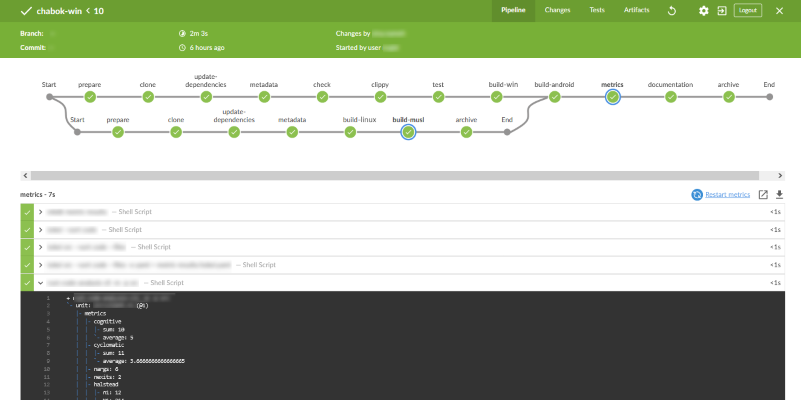
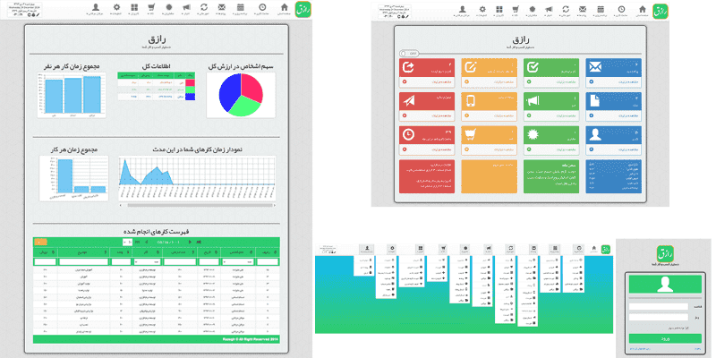
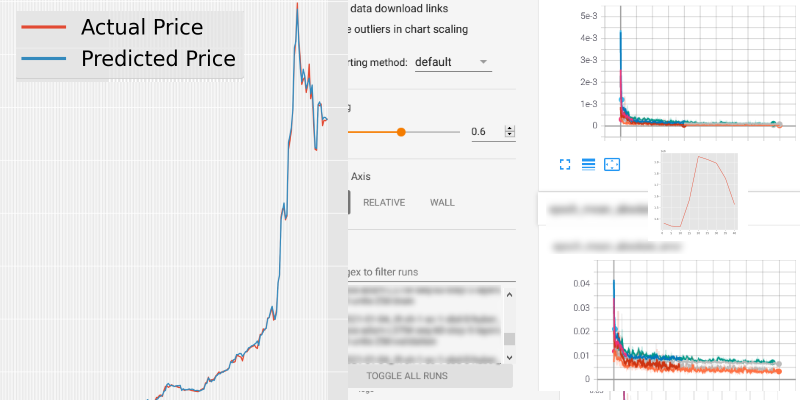
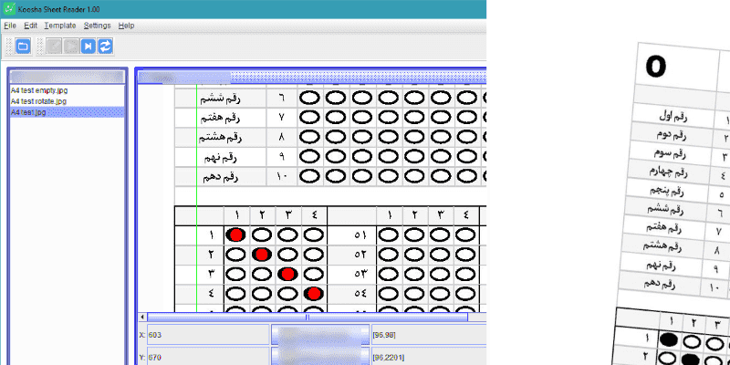
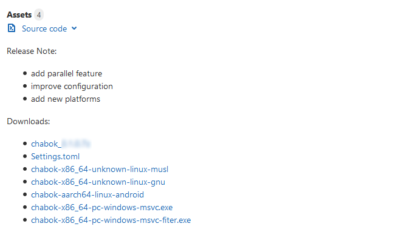
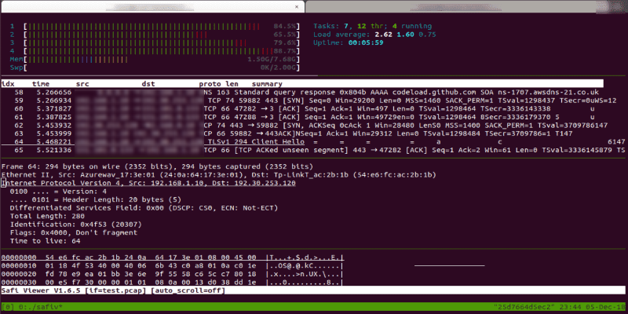
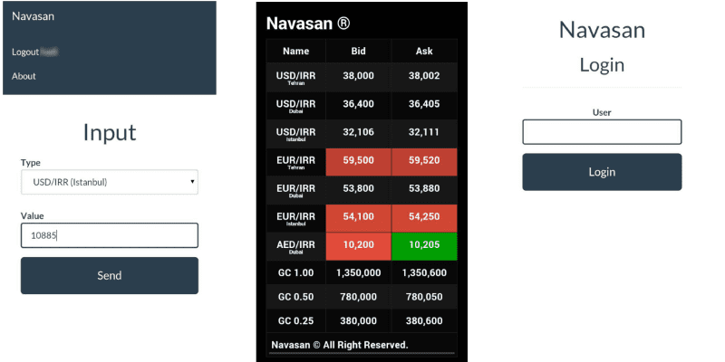
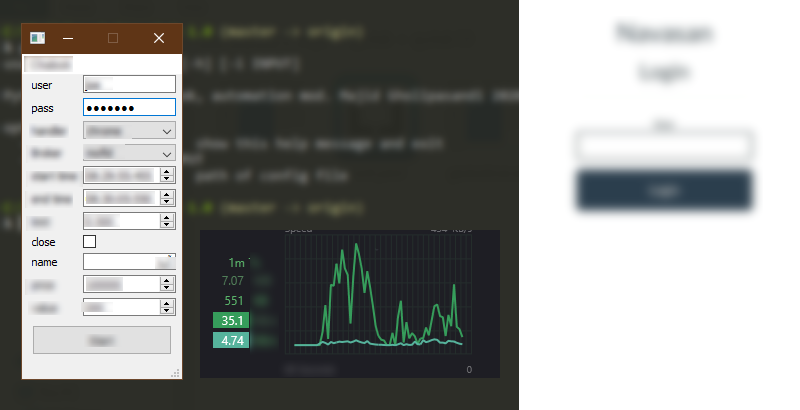
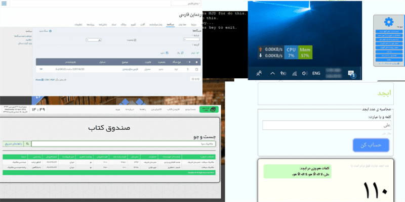

My Notable Projects
-
2021
Design and implement network management softwares with web interface
My experience in system programming web development network security
Network management software that helps manage and monitor computer networks. It can help with tasks such as network performance monitoring, network security management, and network traffic analysis, firewall and virtual private network management.
-
2019
Design and implement CI/CD
My experience in DevOps QA
Continuous integration (CI) and continuous delivery (CD) embody a culture, set of operating principles, and collection of practices that enable application development teams to deliver code changes more frequently and reliably.

The implementation is also known as the CI/CD pipeline. CI/CD is one of the best practices for devops teams to implement. It is also an agile methodology best practice, as it enables software development teams to focus on meeting business requirements, code quality, and security because deployment steps are automated. -
2015
Razegh
My experience in Web development Client–server model
Razegh is a modern ERP software. Enterprise Resource Planning (ERP) software is a type of business management software that integrates various aspects of a company's operations, such as accounting, inventory, supply chain, and human resources. It helps companies to manage their resources efficiently by providing an integrated system for data storage, processing, and retrieval. The main goal of ERP software is to streamline business processes, reduce costs, and improve overall productivity. By using a single database that can be accessed by different departments within the company, ERP software eliminates the need for multiple systems and reduces errors caused by data inconsistencies. ERP software also provides real-time visibility into key performance indicators (KPIs), such as inventory levels, sales, and production. This helps companies to make informed decisions quickly and adapt to changes in the market more effectively. Overall, ERP software is an essential tool for businesses looking to improve their operations and stay competitive in today's fast-paced environment.
 -
2019
Pishgoo!
My experience in AI Machine Learning
Pishgoo! is a Virtual Financial Assistant. A Financial Market Assistant AI is a type of artificial intelligence that is designed to help individuals navigate the complex world of finance and investment. This type of AI can provide a range of services, including personalized investment advice, real-time market updates, and assistance with financial planning. One of the key features of a Financial Market Assistant AI is its ability to analyze large amounts of data quickly and accurately. This includes analyzing market trends, evaluating different investment opportunities, and identifying potential risks and rewards. With this information, the AI can provide individuals with personalized recommendations for investments that are tailored to their specific needs and goals. In addition to providing investment advice, a Financial Market Assistant AI can also help individuals manage their finances more effectively. This includes assisting with budgeting, tracking expenses, and identifying areas where savings can be made. By automating these tasks, the AI can free up time for individuals to focus on other aspects of their financial life. Overall, a Financial Market Assistant AI is an essential tool for anyone looking to navigate the complex world of finance with confidence. With its ability to analyze data, provide personalized recommendations, and manage finances more effectively, this type of AI can help individuals achieve their financial goals and build a secure future.
 -
2017
Koosha
My experience in Desktop softwares Machine vision
Koosha is a OMR software with fault tolerance. OMR (Optical Mark Recognition) software is a type of scanning technology that is used to read and interpret marks made on paper forms. This technology is commonly used in the education sector, where it is used to grade multiple-choice exams. The process typically involves providing students with a test booklet containing multiple-choice questions. Each question has a corresponding bubble or circle that the student can fill in using a pencil or pen. Once the exam is completed, the booklet is scanned using an OMR scanner, which captures images of the filled-in circles. The OMR software then uses sophisticated algorithms to analyze the images and determine the correct answers for each question. The software can also grade the exams automatically, providing immediate feedback to students and teachers. In addition to multiple-choice exams, OMR technology can also be used to score other types of paper-based assessments, such as surveys or tests with open-ended questions. Overall, OMR software is a powerful tool for streamlining the examination process and improving the accuracy of grading.
 -
2020
Chabok
My experience in System programming Software Architectures
Chabok project is financial transaction tool with asynchronous parallel architecture for high scalability. Chabok is multi-platform. Financial Transaction Software is a type of application designed to facilitate financial transactions such as payments, invoicing, and accounting. This type of software can be used by businesses to manage their finances, including tracking expenses, generating invoices, and processing payments. Some common features of Financial Transaction Software include bank reconciliation, general ledger management, accounts payable and receivable, and financial reporting. These tools help businesses to better manage their cash flow, reduce errors, and improve overall financial efficiency.
 -
2018
Safi suite tools
My experience in System programming Network programming
Safi project is a suite of high performance tools for network capture, filter, reassemble ... . Safi can process GB data flow with a modern DPI. Deep Packet Inspection (DPI) software is a type of network security technology that is used to inspect and analyze data packets traveling through a network. This technology can be used to identify malware, detect unauthorized access attempts, and enforce network policies. DPI works by examining the contents of each packet, including the source and destination IP addresses, port numbers, and packet payload. The software can then analyze this information to determine whether the packet is part of a legitimate communication or a potential security threat. In addition to network security, DPI software can also be used for traffic shaping, quality of service (QoS) management, and other network optimization tasks. Overall, DPI technology is an essential tool for ensuring the security and performance of modern networks.
 -
2016
Navasan
My experience in Mobile app development Machine learning
Navasan is an exchange management app for customers and exchange offices. Exchange Management Software is a type of application designed to help retailers manage their inventory, sales, customers, and other aspects of their business. This type of software typically includes features such as point-of-sale (POS) systems, inventory tracking, customer relationship management (CRM), and reporting tools.
 -
2020
Pishro
My experience in Desktop applications API design
Pishro is a multi-platform Chabok client. pishro has CLI and GUI interface and library.
 -
2016
Other projects
My experience in variable
My other projects are Nobi library managment system, sfd-downloader, Abjad, Koosha, MJDMonitor, Bookbin, ... .

Work History
-
2018
Mahsan
Developer, DevOPS
(2018 - 2021) | Tehran, Iran
Network Security softwares.
-
2016
Kavosh
Developer
(2016 - 2018) | Tehran, Iran
ALRP(Automatic License Plate Recognition)
-
2014
Zarrin ITC
Developer
(2014 - 2016) | Tehran, Iran
ERP, OCR softwares.
Education History
-
2017
KNT University
Masters, Artificial intelligence
(2017 - 2018) | Tehran, Iran
Artificial intelligence
Programming Skills
-
Python
-
Rust
-
Go
-
C/C++
-
Javascript (TypeScript)
-
PHP
-
HTML5 and CSS3
Developing Skills
-
Unix/Linux and Bash
-
VCS's (git, hg)
-
CI/CD (Jenkins, Gitlab, Azuredevops)
-
Database (MySQL, Redis, MongoDB, PostgreSQL, Sqlite)
-
GCC, LLVM Collections (GCC, GDB, CLANG ...)
-
Network protocols(TCP/IP, UDP, HTTP, SIP, ...)
-
PaaS (Docker, Swarm, CRI-O, Kubernetes, Podman, Youki)
-
Virtualization (KVM, QEMU, Firecracker)
-
Load balancers and distribution, Reverse Proxy ...
Language Skills
- NativePersian
- MediumEnglish